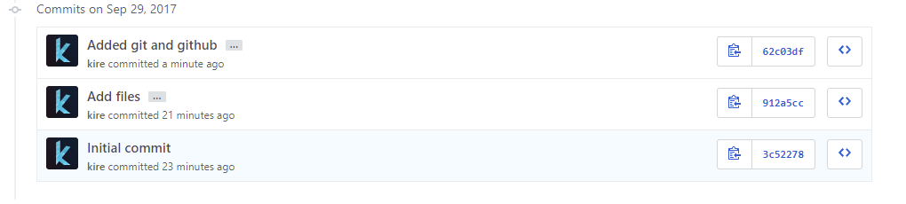

Git
Hva er Git? Git er det mest brukte versjon kontroll system og begynner å bli standarden for versjon kontrollering. Hver gang du gjør endringer eller oppdaterer koden din blir det loggført i git. Dette gjør at du kan lett gå tilbake til tidligere versjoner av koden. Git er perfekt hvis man skal samrbeide om et prosjekt. Når flere jobber sammen og gjør endringer kan det fort bli krøll som kan føre til at ting ikke fungerer. Her kommer Git inn. Som nevnt tidligere loggfører Git alle endringer gjort og hvem de er gjort av slik at man kan finne tilbake til tidligere versjoner enkelt
GitHub
Hva er GitHub? GitHub er enkelt forklart et oppbevaringssted for Git. Med et enklere grensesnitt. GitHub er gratis og gjør det enkelt for flere brukere å samarbeide på samme prosjekt. GitHub tilbyr også en betalt funksjon for å lage projektene dine hemmelige for andre, men du får fortsatt samme kontrollen over alle endringene du gjør
